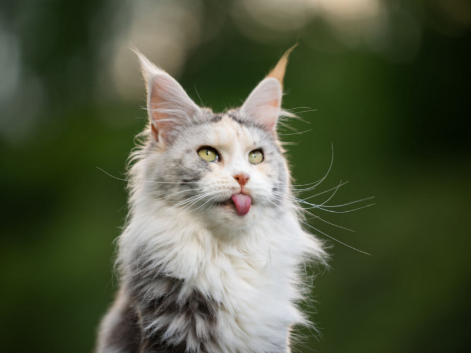

A seguir serão apresentadas imagens de gatos.

Gato siamês é uma raça de gato oriental, caracterizada por um corpo elegante e esguio e uma cabeça marcadamente triangular.
Maine Coon é uma raça de gato originária do nordeste dos Estados Unidos. É considerada a raça de pelo mais antiga, além de ser a maior de todas as raças de gato do mundo.

O gato Korat é uma raça de gato doméstico cinza-azulado, de pontas prateadas, com uma constituição pequena a média e uma baixa porcentagem de gordura corporal.